Trip To Taiwan again
Immediately after Korea I flew to Taiwan, I had another week off and I wanted to go back to Taiwan as it's literally my favorite country in the world. And this trip made me love it even more.
The first 2 days were a real black hole. I didn't really like the hostel I stayed in (Wow Hostel Ximen). And I was walking around clueless. I think I was also exhausted from Korea. I did however find a pottery studio right next to where I slept so I went there. Anazing people, the teacher specifically, he's a real character. Funny and cynical - a rockstar!
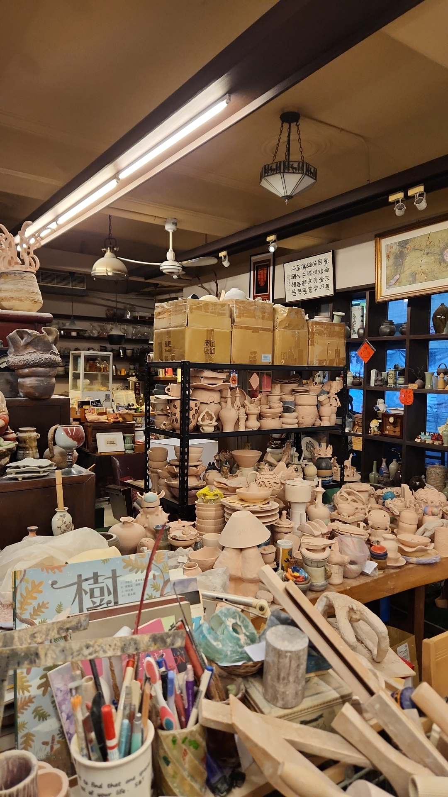
But I was mostly passing my time walking in the streets. I really wanted to hike but couldn't get myself to do it.
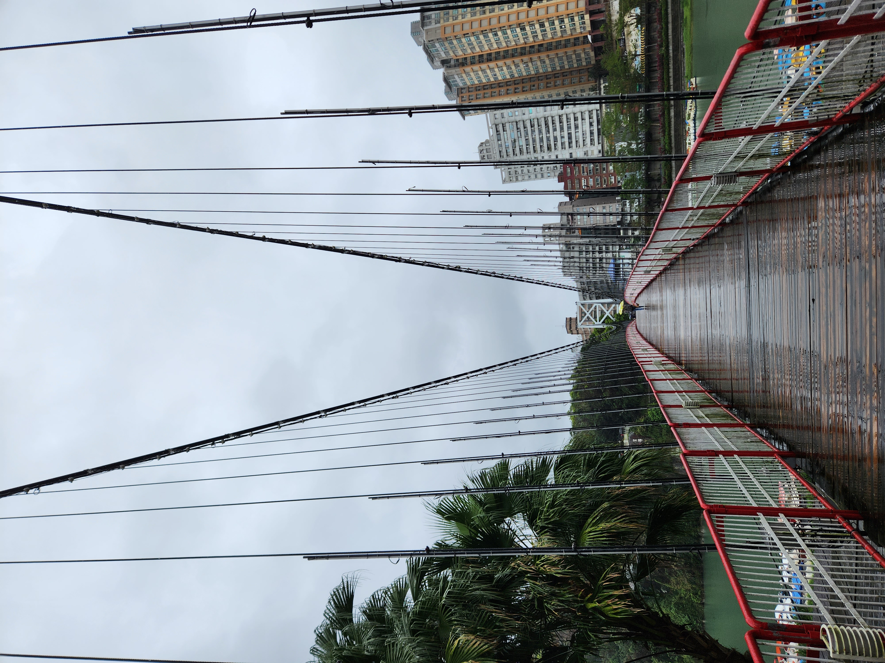 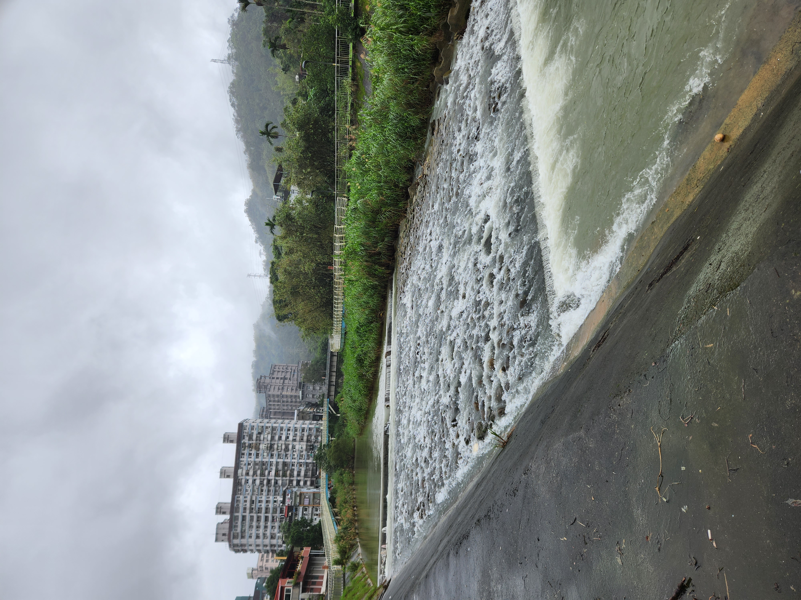 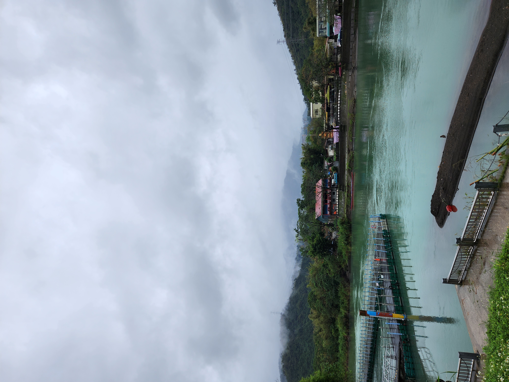
The third day I woke up at 9, read online that you can make it to Jioufen at around 10 and have plenty of time. So off I went. It was a nice place! At least the short hikes. I wasn't really interested in the old street. It's just tourist traps mostly. But of course with my luck being my luck the second I reach the top of the small mountains, complete fog. And as I go down, the fog clears!
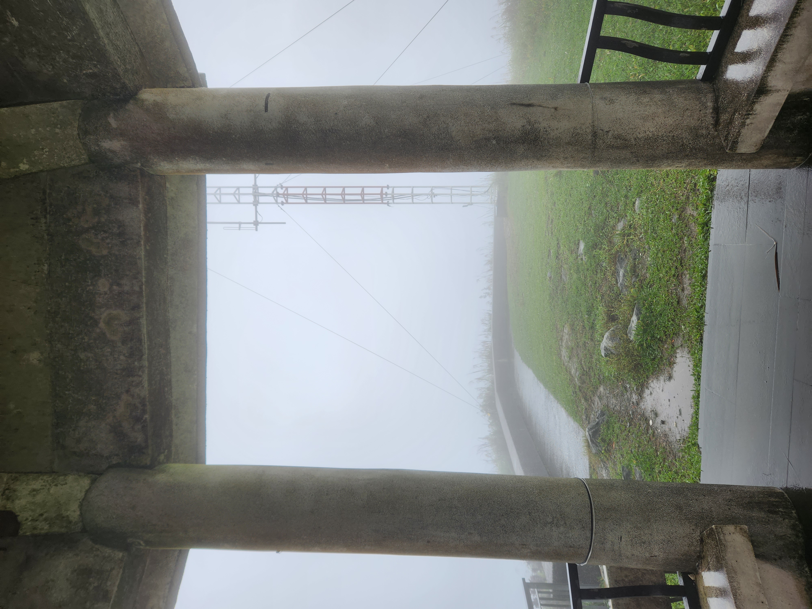 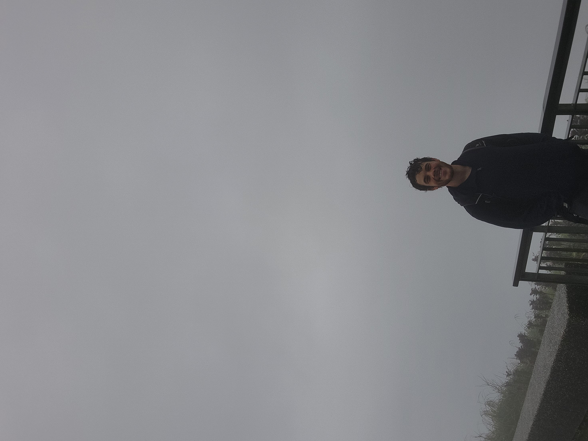 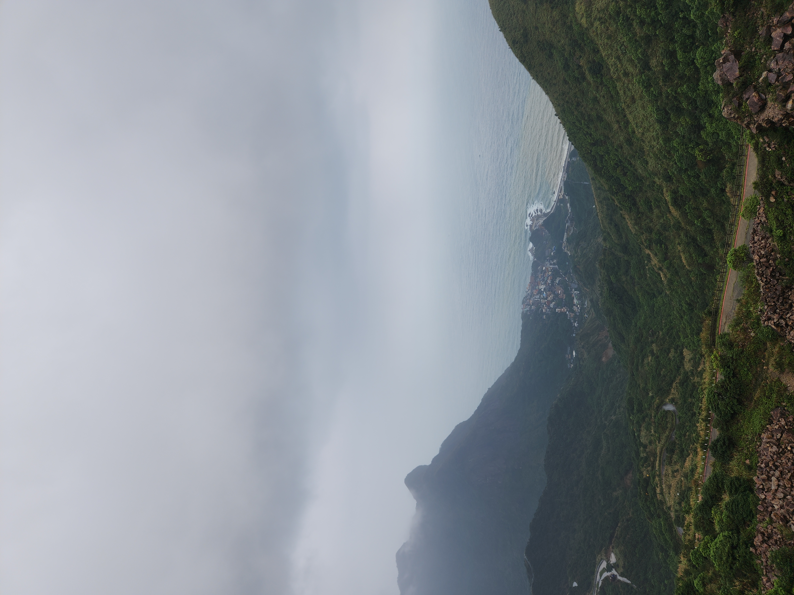 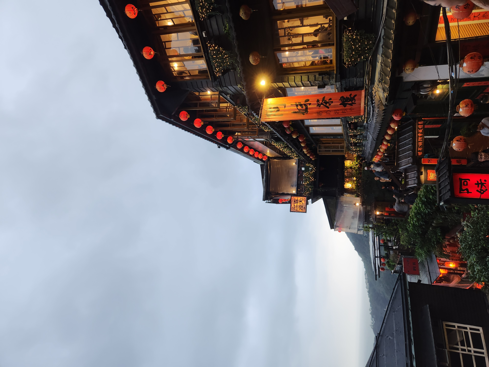
The next day I decided to hike Qixing shan mountain. Again I woke up late at 9AM, but decided to go anyway. I met an old guy at the bus stop which told me which stop to take for the hike. But because of the Typhoon that route is closed. So I walked around aimlessly in a very peaceful village.


Until I tagged along a group of old Taiwanese people who were hiking. They asked me where I was going, I said Qixing shan and they went into panic for me, told me the route from the village is closed and took me to the nearest bus stop for the other route.
The hike was short - 3KM to the top and then the same way down. I met an older filipino guy, we hiked it up together and he even shared snacks with me on the peak. But of course, the second I get to the peak it's all fog and rain. It was hot that day, but on the peak it was freezing.
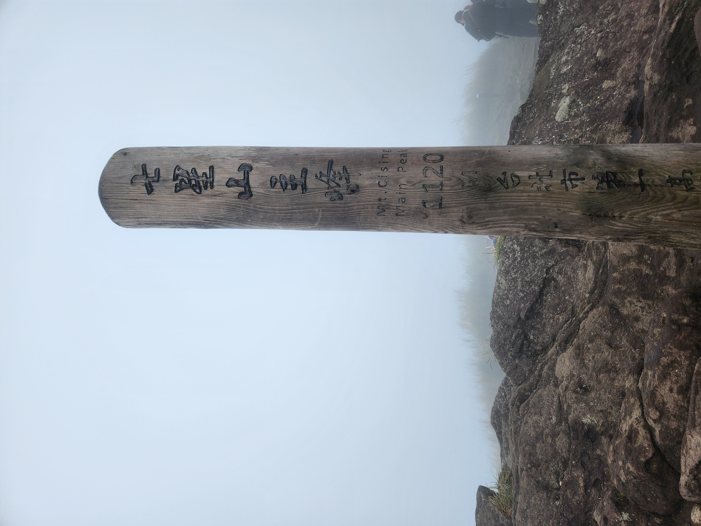 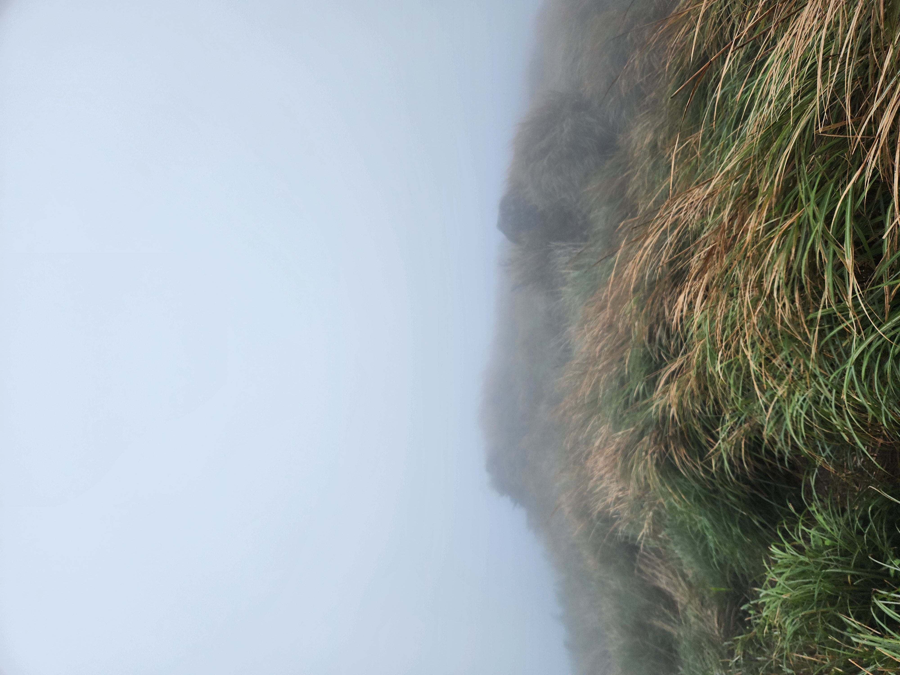
The following day I did a short hike in some hot springs in Taipei with a lovely girl I met on Jioufen. And then I went to the pottery studio once again and finally made a teapot with the help of the pottery instructor!
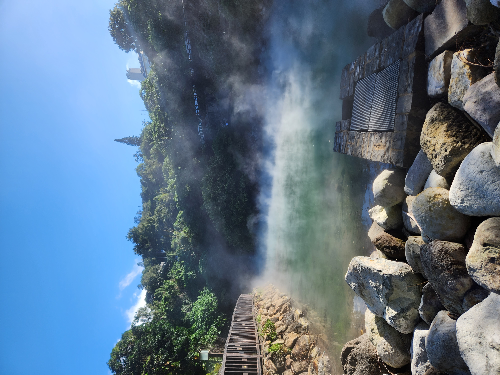 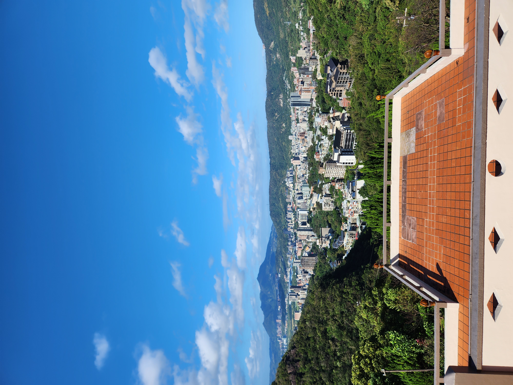 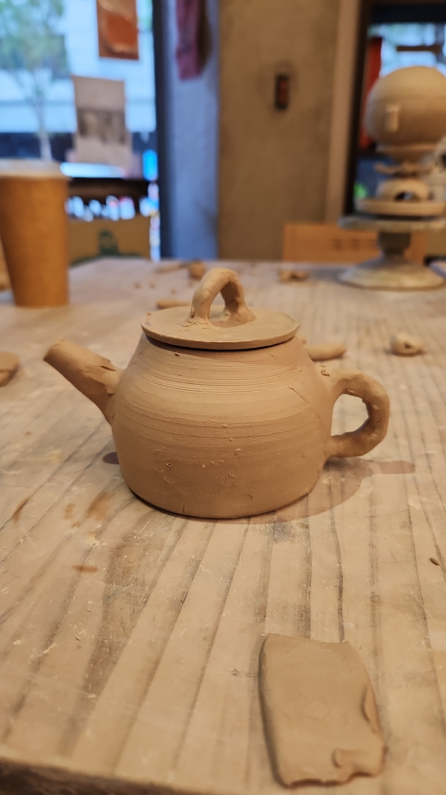
I absolutely love Taiwan, if not for the weather that actually has summer, winter, fall and spring. Then for the people. It almost felt like Israel. People hearing my conversation about if this is the correct train or not and telling me if it is. People being kind and chatty. Last year when I traveled Taiwan I heard a sentence that stuck with me - "The biggest attraction in Taiwan are the people".